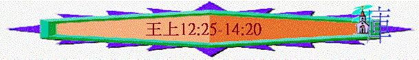

|
屬神國度的衰落 |
|||
|
二王—行神的旨意得堅固
|
二國—不專心順服終分裂
|
二先知—神能力彰顯仍剛硬
|
二結局—繼續行惡至終亡國
|
|
王上1-10 |
王上11-16 |
王上17-王下9:4 |
王下9:5-25:30 |
二.二國—不專心順服終分裂(11-16)
1.王國的分裂(11-12:24)
2.早期的北國(12:25-14:20)
～早期的北國以耶羅波安為代表
～神對耶羅波安的評語是他沒有像大衛一心順服神，神立他為君王，但他的心仍至終不順服神
A.用宗教堅固自己的國度
a.鑄金牛犢
(1)沒有信心的引發
「你若聽從我一切所吩咐你的，遵行我的道，行我眼中看為正的事，謹守我的律例誡命，像我僕人大衛所行的，我就與你同在，為你立堅固的家，像我為大衛所立的一樣，將以色列人賜給你。」11:38
「耶羅波安在以法蓮山地建築示劍，就住在其中；又從示劍出去，建築毗努伊勒。耶羅波安心裡說：「恐怕這國仍歸大衛家；這民若上耶路撒冷去，在耶和華的殿裡獻祭，他們的心必歸向他們的主猶大王羅波安，就把我殺了，仍歸猶大王羅波安。」」12:25-27
～耶羅波安分別在約但河西面和東面，選示劍和毘努伊勒為據點
～他為何要造金牛犢？因為他沒有信心，神雖曾應許他若遵守主的話，神必堅固他的家，但他恐怕以色列百姓上耶路撒冷(因殿在其中)，所以在自己的地土中建邱壇、建殿宇也鑄金牛犢，免得百姓走進南國，自己的國度也不堅穩
～他因不信，而帶來懼怕，也引出神所憎惡的罪行
(2)充滿私心的動機
「耶羅波安王就籌劃定妥，鑄造了兩個金牛犢，對眾民說：「以色列人哪，你們上耶路撒冷去實在是難；這就是領你們出埃及地的神。」他就把牛犢一隻安在伯特利，一隻安在但。」12:28-29
「耶羅波安為邱壇、為鬼魔（原文作公山羊）、為自己所鑄造的牛犢設立祭司。」代下11:15
～他表面是為百姓之便敬拜神，而在國中建像，但代下11:15表示他是為自己，為自己的國度，為自己的家得堅固，為自的利益而建造。
(3)還有別神的祭祠
「你竟行惡，比那在你以先的更甚，為自己立了別神，鑄了偶像，惹我發怒，將我丟在背後。」14:9
～代下11:15也說明耶羅波安祭祠鬼魔，鬼魔原文作公山羊，這種鬼魔相傳具羊形，是埃及的土地神。
～耶羅波安不單祭祠以牛犢代表領出埃及的神，也祭祠別神，他是將神丟在背後，以別的代替神！
(4)厭棄律例的惡行
「不可為自己雕刻偶像，也不可做什麼形像彷彿上天、下地，和地底下、水中的百物。」出20:4
「你要謹慎，不可在你所看中的各處獻燔祭。惟獨耶和華從你那一支派中所選擇的地方，你就要在那裡獻燔祭，行我一切所吩咐你的。」申12:13-14
～十誡中題及不可造偶像，申命記也講及不可在別的地方獻祭，但耶羅波安將神的律例丟下，行神眼中的惡事
(5)連累子孫的惡果
「這事叫百姓陷在罪裡，因為他們往但去拜那牛犢。」12:30
「他行耶和華眼中看為惡的事，不離開尼八的兒子耶羅波安使以色列人陷在罪裡的一切罪，仍然去行。」王下13:11
「他行耶和華眼中看為惡的事，效法他列祖所行的，不離開尼八的兒子耶羅波安使以色列人陷在罪裡的那罪。」王下15:9
「將以色列國從大衛家奪回；他們就立尼八的兒子耶羅波安作王。耶羅波安引誘以色列人不隨從耶和華，陷在大罪裡。以色列人犯耶羅波安所犯的一切罪，總不離開，」王下17:21-22
～因耶羅波安設立了邱壇、金牛犢，引誘日後百姓拜偶像，也令日後的王也跟隨，最終惹神發怒，以色列也要被滅去
b.自立祭司
「耶羅波安在邱壇那裡建殿，將那不屬利未人的凡民立為祭司。」12:31
「利未人撇下他們的郊野和產業，來到猶大與耶路撒冷，是因耶羅波安和他的兒子拒絕他們，不許他們供祭司職分事奉耶和華。」代下11:14
(1)任意妄為
(2)不合神意
(3)沒神權柄
(4)攔阻事奉
(5)操控宗教
～神揀選利未支派及亞倫後裔作子孫的，耶羅波安是沒權另立祭司，但他卻任意妄為，不從神的心意，另立別的作祭司，更攔阻真正作祭司的事奉神
～他可能想操控宗教，用宗教管轄百姓，建立自己的勢力
c.私定節期
「你曉諭以色列人說：這
「耶羅波安定
～以色列人的節期是神所立的，為要叫人分別出來，放低自己，放低一切，專心記念真神
～而神定了每年七月十五為住棚節，但耶羅波安卻私自下另一日期──
(1)顧念自己國度──不是記念真神
(2)屬於自己日子──不是分別歸神
～人用表面看為屬靈的事，建立自己國度，滿足自己的私心，是神所不悅納的
B.用剛硬回應神人的警告
a.神人的警告
(1)預言──邱壇祭司被殺掉
「那時，有一個神人奉耶和華的命從猶大來到伯特利。耶羅波安正站在壇旁要燒香；神人奉耶和華的命向壇呼叫，說：「壇哪，壇哪！耶和華如此說：大衛家裡必生一個兒子，名叫約西亞，他必將邱壇的祭司，就是在你上面燒香的，殺在你上面，人的骨頭也必燒在你上面。」」13:1-2
～「神人」與先知一樣，是屬神的人，他預言當約西亞作王時，邱壇的祭司會被殺
(2)預兆──壇破裂灰必傾散
「當日，神人設個預兆，說：「這壇必破裂，壇上的灰必傾撒，這是耶和華說的預兆。」」13:3
b.君王的反應
(1)捉拿神人
「耶羅波安王聽見神人向伯特利的壇所呼叫的話，就從壇上伸手，說：「拿住他吧！」王向神人所伸的手就枯乾了，不能彎回；」13:4
(2)遭神管教
「壇也破裂了，壇上的灰傾撒了，正如神人奉耶和華的命所設的預兆。」13:5
～神管教耶羅波安，使他的手枯乾
～神人的說話果然應驗，壇真是破裂，灰也傾撒
(3)求神施恩
「王對神人說：「請你為我禱告，求耶和華你神的恩典使我的手復原。」於是神人祈禱耶和華，王的手就復了原，仍如尋常一樣。」13:6
(4)收買神人
「王對神人說：「請你同我回去吃飯，加添心力，我也必給你賞賜。」神人對王說：「你就是把你的宮一半給我，我也不同你進去，也不在這地方吃飯喝水；因為有耶和華的話囑咐我，說不可在伯特利吃飯喝水，也不可從你去的原路回來。」於是神人從別的路回去，不從伯特利來的原路回去。」13:7-10
～王欲請神人吃飯，可能想巴結先知，但神的命令不可在伯特利進食(可能因為伯特利有金牛犢，是不潔之地)也不可返回原路
(5)至終硬心
「這事以後，耶羅波安仍不離開他的惡道，將凡民立為邱壇的祭司；凡願意的，他都分別為聖，立為邱壇的祭司。這事叫耶羅波安的家陷在罪裡，甚至他的家從地上除滅了。」13:33-34
c.神僕的跌倒
(1)先知的邀請
「有一個老先知住在伯特利，他兒子們來，將神人當日在伯特利所行的一切事和向王所說的話都告訴了父親。」13:11
「老先知對他說：「請你同我回家吃飯。」」13:15
(2)神僕的跌倒
(A)起初清楚神吩咐
「神人說：「我不可同你回去進你的家，也不可在這裡同你吃飯喝水；因為有耶和華的話囑咐我說：『你在那裡不可吃飯喝水，也不可從你去的原路回來。』」」13:16-17
(B)至終卻沒有遵守
～原因何在？
(a)受別人欺哄
「老先知對他說：「我也是先知，和你一樣。有天使奉耶和華的命對我說：『你去把他帶回你的家，叫他吃飯喝水。』」這都是老先知誆哄他。」13:18
(b)受安舒誘惑
(c)沒堅定心志
(C)最後遭神的審判
「他就對那從猶大來的神人說：「耶和華如此說：你既違背耶和華的話，不遵守耶和華你神的命令，反倒回來，在耶和華禁止你吃飯喝水的地方吃了喝了，因此你的屍身不得入你列祖的墳墓。」」13:21-22
～作為神的僕人，是重要是遵守神的話，當神僕教人行主的命令，自己也要遵守，不遵守者會遭神管教
(a)顯出審判是從神而來
「吃喝完了，老先知為所帶回來的先知備驢。他就去了，在路上有個獅子遇見他，將他咬死，屍身倒在路上，驢站在屍身旁邊，獅子也站在屍身旁邊。」13:23-24
「他去了，看見神人的屍身倒在路上，驢和獅子站在屍身旁邊，獅子卻沒有吃屍身，也沒有抓傷驢。」13:28
～神人被獅子咬死，但卻沒有咬吃屍體，又沒有傷害驢，明顯不是尋常的被野獸所殺，是有神掌管的審判
(b)顯出違命有嚴重後果
「那帶神人回來的先知聽見這事，就說：「這是那違背了耶和華命令的神人，所以耶和華把他交給獅子；獅子抓傷他，咬死他，是應驗耶和華對他說的話。」」13:26
(c)顯出主話是必會應驗
「就把他的屍身葬在自己的墳墓裡，哀哭他，說：「哀哉！我兄啊。」安葬之後，老先知對他兒子們說：「我死了，你們要葬我在神人的墳墓裡，使我的屍骨靠近他的屍骨，因為他奉耶和華的命指著伯特利的壇和撒瑪利亞各城有邱壇之殿所說的話必定應驗。」」13:30-32
「約西亞問說：「我所看見的是什麼碑？」那城裡的人回答說：「先前有神人從猶大來，預先說王現在向伯特利壇所行的事，這就是他的墓碑。」
約西亞說：「由他吧！不要挪移他的骸骨。」他們就不動他的骸骨，也不動從撒瑪利亞來那先知的骸骨。」王下23:17-18
～老先知就知道神管教神人的話是真實的，是會應驗的，他也會想起神人曾預言邱壇的祭司必被殺，他們的骨頭必被掘出而燃燒，他知道也會應驗，所以命人安葬他在神人墓裏，人見到神人，也不會將他的骨拿出來焚燒，間接令他的骨頭也安然得保
C.用惡行換來真神的審判
a.兒子的重病
「那時，耶羅波安的兒子亞比雅病了。」14:1
b.錯誤的尋求
(1)沒誠心的尋求
「耶羅波安對他的妻說：「你可以起來改裝，使人不知道你是耶羅波安的妻，往示羅去，在那裡有先知亞希雅。他曾告訴我說，你必作這民的王。」14:2
～為何耶羅波安自己不肯去先知希雅面前真心尋求？或許他恐怕亞希雅像神人一樣審判他，所以要妻子改裝作婦人求先知憐憫，又或許他怕面對從前立他作王的先知，因自己沒有守先知的吩咐
～但人來到神面前，需要真誠、坦然及誠心
(2)用交易的尋求
「現在你要帶十個餅，與幾個薄餅，和一瓶蜜去見他，他必告訴你兒子將要怎樣。」」14:3
(3)沒悔意的尋求
「他剛進門，亞希雅聽見他腳步的響聲，就說：「耶羅波安的妻，進來吧！你為何裝作別的婦人呢？我奉差遣將凶事告訴你。你回去告訴耶羅波安說：『耶和華以色列的神如此說：我從民中將你高舉，立你作我民以色列的君，將國從大衛家奪回賜給你；你卻不效法我僕人大衛，遵守我的誡命，一心順從我，行我眼中看為正的事。你竟行惡，比那在你以先的更甚，為自己立了別神，鑄了偶像，惹我發怒，將我丟在背後。」14:6-9
～其實尋求神的憐憫最大的關鍵是人的悔意，但神藉先知責備耶羅波安的罪行，也在經文中看不到他用認罪的心親自來到神面前尋求神！
c.真神的審判
(1)耶羅波安的一家受災禍
「因此，我必使災禍臨到耶羅波安的家，將屬耶羅波安的男丁，無論困住的、自由的都從以色列中剪除，必除盡耶羅波安的家，如人除盡糞土一般。凡屬耶羅波安的人，死在城中的必被狗吃，死在田野的必被空中的鳥吃。這是耶和華說的。』」14:10-11
(2)耶羅波安的兒子必要死
「所以你起身回家去吧！你的腳一進城，你兒子就必死了。以色列眾人必為他哀哭，將他葬埋。凡屬耶羅波安的人，惟有他得入墳墓；因為在耶羅波安的家中，只有他向耶和華以色列的神顯出善行。」14:12-13
「耶羅波安的妻起身回去，到了得撒，剛到門檻，兒子就死了。以色列眾人將他葬埋，為他哀哭，正如耶和華藉他僕人先知亞希雅所說的話。」14:17-18
～他兒子必死，但因他生前有善行，所以可得入墳墓
(3)耶羅波安的王位不延續
「耶和華必另立一王治理以色列。到了日期，他必剪除耶羅波安的家；那日期已經到了。」14:14
(4)以色列人也會受神擊打
「耶和華必擊打以色列人，使他們搖動，像水中的蘆葦一般；又將他們從耶和華賜給他們列祖的美地上拔出來，分散在大河那邊；因為他們做木偶，惹耶和華發怒。因耶羅波安所犯的罪，又使以色列人陷在罪裡，耶和華必將以色列人交給仇敵。」」14:15-16
d.君王的壽終
「耶羅波安其餘的事，他怎樣爭戰，怎樣作王，都寫在以色列諸王記上。耶羅波安作王二十二年，就與他列祖同睡。他兒子拿答接續他作王。」14:19-20